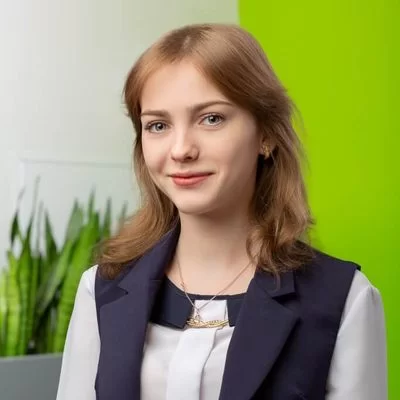

Shishko Yulia
E-mail: shishkoulia@gmail.com
Phone: +79787956491
Skype: shishkoulia
https://github.com/shishkoulia
Skills
C++, Python, Java, Pascal, HTML/CSS/JavaScript, PHP, MySQL
NumPy, JavaFX, Gson, Swing, Arduino
Experience
- 2019–now, Yandex Lyceum, teacher (Python)
- SWEngine — participation in open source game engine (C++, OpenGL, glm)
- Trains' scheduler — university semester lab work (Java, JavaFX, Gson, OOD)
- DNA-BCI correlation analysis for VSU medicine cybernetics lab (Python, NumPy, PCA)
- Smart clock with air quality sensors (C, Arduino)
Education
- 2018–2022, Voronezh State University, Computer Science faculty, specialization: software engineering, BS
- 2019, Moscow International Workshop ICPC
- 2019, Yandex Lyceum professional education workshop
- 2016, Kolmogorov Summer School
- 2015, Sokol Summer Camp, Minor Academy of Science
Additional
Participated in 1/2 ACM ICPC World Final (NERC), 2019
1st place in Voronezh CTF 2019
3rd diploma in Open Student Championship of the Volga region in competitive programming, 2019
3rd diploma in Southern Federal University Programming Olympiad, 2019